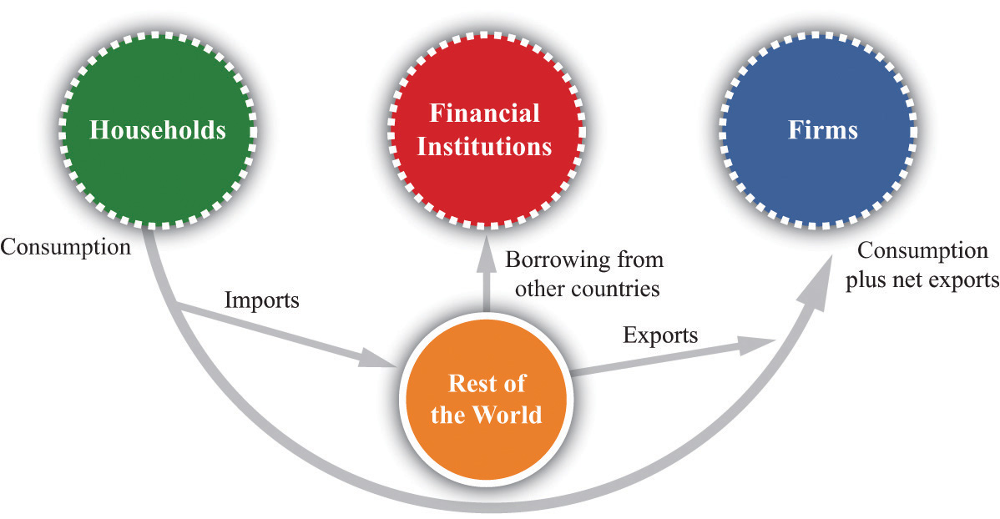
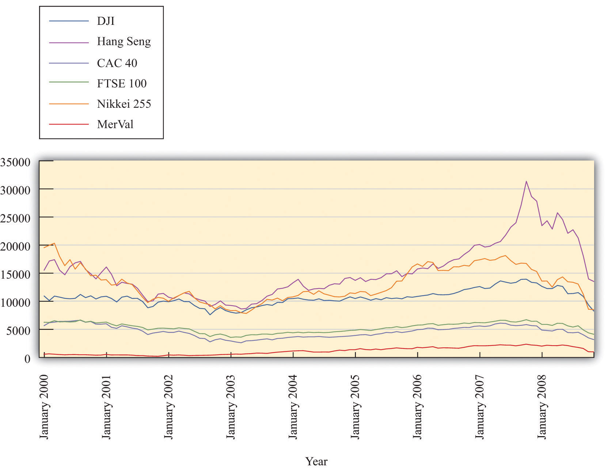

After you have read this section, you should be able to answer the following questions:
In Chapter 24 "Money: A User’s Guide", we spoke of the day when people in several European countries woke up to a new monetary regime that used different pieces of paper than were used previously. In that chapter we used that experience to help us understand why people hold money. When these countries adopted the euro, they were not expecting to wake up about a decade later to read something like this:
“On the eve of a confidence vote that may bring down Papandreou’s government, euro-area finance ministers pushed Greece to pass laws to cut the deficit and sell state assets. They left open whether the country will get the full 12 billion euros ($17.1 billion) promised for July” as part of last year’s 110 billion-euro lifeline.
“We forcefully reminded the Greek government that by the end of this month they have to see to it that we are all convinced that all the commitments they made are fulfilled,” Luxembourg Prime Minister Jean-Claude Juncker told reporters early today after chairing a crisis meeting in Luxembourg.James G. Neuger and Stephanie Bodoni, “Bailout Bid for Greece Falters as Europe Insists Papandreou Cut Budget Gap,” June 20, 2011, accessed July 26, 2011, http://www.bloomberg.com/news/2011-06-20/europe-fails-to-agree-on-greek-aid-payout-pressing-papandreou-to-cut-debt.html; Karen Kissane, “EU puts brakes on loan to Greece,” Sydney Morning Herald, June 21, 2011, accessed July 26, 2011, http://www.smh.com.au/world/eu-puts-brakes-on-loan-to-greece-20110620-1gbxw.html; James Neuger and Stephanie Bodoni, “Europe Fails to Agree on Greek Aid Payout,” June 20, 2011, accessed September 20, 2011, http://www.bloomberg.com/news/2011-06-20/europe-fails-to-agree-on-greek-aid-payout-pressing-papandreou-to-cut-debt.html.
The euro was established by the Maastricht Treaty, but the implications of that treaty went beyond the introduction of new pieces of paper. The nature of fiscal and monetary interactions across the countries within the Economic and Monetary Union (EMU) changed dramatically as well.
On the monetary side, in addition to losing their national currencies, the countries that joined the euro effectively lost their central banks. The Central Bank of Italy, say, which formerly conducted monetary policy in that country, handed over that duty to the European Central Bank (ECB). The same thing happened in other countries. Most significantly, the German Bundesbank, which was one of the most important central banks in the world, also ceded its powers to the ECB. Further, the Maastricht Treaty—and the Stability and Growth Pact that followed a few years later—placed restrictions on fiscal policy by member countries.For a discussion of the history and content of the Stability and Growth Pact, see “Stability and Growth Pact,” European Commission Economic and Financial Affairs, accessed September 20, 2011, http://ec.europa.eu/economy_finance/sgp/index_en.htm. Prior to the introduction of the euro, member governments had complete discretion over their fiscal policy. Within the EMU, however, constraints on deficit spending were placed on member countries.
Taken together, these two factors radically changed the conduct of monetary and fiscal policy in the countries of the EMU. Some commentators questioned whether adequate tools for stabilization of aggregate economies were still available. Others wondered whether the constraints on fiscal policy would be violated by member countries, leading to the possibility of a debt crisis for a country within the euro area. In that event, how would the other member countries respond?
The crisis of 2008 provided the first big tests of these questions. Debt problems—not only in Greece but also in Portugal and Ireland—revealed that these concerns were well placed. We start by discussing how the crisis spread from the United States to Europe and then turn to the policy actions within Europe.
In Chapter 20 "Globalization and Competitiveness", we explained how countries are linked through the flows across national borders of goods, services, labor, financial capital, and information. Countries do not exist in isolation, and these linkages imply that problems in one country can be transmitted to others. In the crisis of 2008, we can point to three broad channels of spillover from the United States to the rest of the world:
The first two linkages can be seen in the circular flow of income in Figure 30.2 "The Foreign Sector in the Circular Flow". In this version of the circular flow, we highlight the interactions between a single country and the rest of the world. These interactions operate through the flows of goods and services and financial assets. During good times, they are a key part of the workings of the world economy. But during bad times, such as a financial crisis, these same links create channels for the sharing of financial crises.
Figure 30.2 The Foreign Sector in the Circular Flow
Households purchase goods from other countries; these are called imports. Citizens of other countries purchase our products; these are called exports. A trade deficit requires borrowing from the rest of the world.
There are three international flows in Figure 30.2 "The Foreign Sector in the Circular Flow":
One channel through which the crisis of 2008 spread was the holding of US financial assets by governments, financial institutions, and banks in other countries. Take, for example, mortgages that were marketed and issued in the United States. These mortgages were usually not ultimately held by the banks that issued them to homeowners. Instead they were bundled together with other mortgages and then resold.
These “mortgage-backed securities” were marketed and sold all over the world, not just in the United States. This means that any risk associated with these assets was shared across investors in different countries. The spread of this risk across world markets also provided a way for the crisis to propagate across countries. When it became clear that these assets were less valuable than investors had previously thought, the reduction in their price reduced the wealth of investors all over the globe. Moreover, the various financial institutions in the United States that were either bought out or went bankrupt were partly owned by investors in other countries. Thus financial links across the world economy provided one avenue for the spread of the crisis.
Second, the financial flows across countries played a significant role in the spread of the crisis. Since the early 1970s, the United States has run current account deficits each year. One consequence of this is that it has been borrowing from abroad to finance these deficits. In other words, foreigners hold substantial amounts of US assets. These assets include US government debt and, in many cases, large amounts of mortgage-backed securities.
One way to see the extent of these financial interactions is to look at the behavior of stock markets around the globe. Figure 30.3 "Stock Markets around the World Crashed Together" shows the values for six indices around the world: the Dow Jones Industrial Average (United States), CAC (France), FTSE (United Kingdom), Hang Seng (China), Nikkei (Japan), and Merval (Argentina). The figure shows that the last six months of 2008 were problematic for stock markets across many countries.
Figure 30.3 Stock Markets around the World Crashed Together
Trade is another source of linkage across countries. Because countries sell goods and services to each other, a recession in one country will naturally spread to others. If the major trading partners of a country are in a recession, then there will be a reduced demand for the goods and services produced by that country. So, for example, if the United States enters into a recession as a consequence of financial market distress, then the demand for goods and services produced in other countries will decrease. This reduction in aggregate spending in other countries will then lead to lower economic activity in those countries.
The circular flow of income shows two of the three spillovers we have identified: financial flows and trade flows. The third spillover has to do with people’s perceptions and expectations about market outcomes. There are two parts to this linkage: (1) expectations matter, and (2) outcomes in one market can have effects in others. The second of these is termed a contagion effectAn effect when an outcome in one market effects the beliefs and thus the behavior of participants in other markets, perhaps in another country..
To the extent that part of the financial distress is due to pessimism, as suggested by the coordination game we discussed in Section 30.1 "The Financial Crisis in the United States", this too is likely to spread across countries. If, day after day, the news from the United States is that the prices of stock and other assets are decreasing, investors in other countries may begin to share this pessimism. This will lead them to sell their assets, leading to decreases in the prices of the assets that they are selling. Decreasing asset prices can feed on themselves through pessimistic expectations. As an example, consider again the September 2008 bankruptcy of Lehman Bros.Landon Thomas Jr., “Examining the Ripple Effect of the Lehman Bankruptcy, New York Times, September 15, 2008, accessed July 26, 2011, http://www.nytimes.com/2008/09/15/business/worldbusiness/15iht-lehman.4.16176487.html.
“Everybody is frozen here after Lehman,” said one senior executive from a major financial institution who was paying visits this week to all the major sovereign funds in Asia and the Middle East. His voice was worn from hours spent in conference rooms trying to explain to clients why Lehman failed and who might be next. “Its just fear.”
In Section 30.1 "The Financial Crisis in the United States", we gave an equation to explain the price of an asset—specifically, a house. A key part of that equation is that the value of a house today depends in part on the price of the house expected in the future. To emphasize this key point again: if you think that people will pay a lot for a house a year from now, you will be willing to pay a lot for it today. The logic applies to all other assets as well, so there is a link between prices expected for the future and prices today. Think about a stock that you might buy on the New York Stock Exchange. The stock yields a dividend and also has a future price. The higher the price you expect the stock can sell for in the future, the more you are willing to pay for the stock today. Expectations matter.
But where do these expectations come from? During normal times, expectations are disciplined by the usual state of a market. If housing prices have been rising by say 3 percent a year for the past 20 years, most people will predict that over the next year, housing prices will again rise by 3 percent. Most of the time that prediction will be roughly right—but not all the time. Sometimes markets are subject to unpredictable movements in prices. When asset prices decline rapidly and unexpectedly, this is often referred to as a “bubble bursting.”
All this discussion suggests that asset prices can be somewhat fragile—and this is where contagion effects can come into play. If you are trading houses in one location and the prices of houses in other locations are all decreasing quickly, you might get concerned that whatever is hurting housing values in those markets will affect yours as well. If so, you might be tempted to try to sell the houses that you own. Of course, others think the same way. As a consequence, the price of houses in your location decreases as well. This is the contagion effect: the behavior of prices in other markets influences expectations in your market and leads to a price reduction in your market. You and the other market participants who feared a decrease in prices are, in the end, correct. In that sense, contagion effects can be self-fulfilling prophesies.
When the crisis hit in the United States, the secretary of the Treasury and the chairman of the Board of Governors of the Federal Reserve System held a joint press conference. By so doing, they made it clear that, in the United States, monetary and fiscal policy were being used jointly to resolve the financial crisis. In Europe, the picture was very different. As we have explained, countries within the EMU have a common central bank but do not have a common fiscal policy. Fiscal policy is decided at the country level, while the ECB is supposed to target the overall European inflation rate (as discussed in Chapter 25 "Understanding the Fed") and is not supposed to play any role in bailing out individual governments.
This system may work in normal times. The events of the crisis of 2008 revealed that it did not work so well in abnormal times; this in turn led to some calls for change.
French President Nicolas Sarkozy called Tuesday for “clearly identified economic government” for the eurozone, working alongside the European Central Bank.
“It is not possible for the eurozone to continue without clearly identified economic government” Sarkozy told the European Parliament in Strasbourg.
The European Central Bank, currently the only joint institution overseeing the 15-nation eurozone, “must be independent,” but the Frankfurt-based monetary body “should be able to discuss with an economic government,” Sarkozy added.See “Sarkozy Calls for ‘Economic Government’ for Eurozone,” The Economic Times, October 21, 2008, accessed July 25, 2011, http://articles.economictimes.indiatimes.com/2008-10-21/news/28393734_1_eurozone-french-president-nicolas-sarkozy-economic-government.
President Sarkozy’s concern was that there is no centralized entity in the EU that can play the same role as the Treasury in the United States. Member governments devise their own fiscal policies to deal with their own country’s problems and do not take account of the effects of their actions on others in the European Union. This matters because the EU countries are so closely linked through trade and capital flows.
Governments within the EU did indeed act unilaterally to preserve their individual banking systems. The French government agreed to a 360 billion euro package of support for the French banking system and made a statement that no banks would collapse. Other countries took similar measures to restore confidence in their banking systems. Such measures sound similar to those taken in the United States, but there is an important difference. For the United States, such spending could be financed by taxes, government borrowing, or monetary expansion. But for, say, France, the equation is different. If the rescue package is not financed by increased taxes, then the French will have to issue more debt. They no longer control their money supply, so they cannot print currency to finance these bailouts.
Moreover, the Stability and Growth Pact, as we explained, places restrictions on the permissible magnitude of deficits by member governments. The reason for these restrictions is that, if many countries in the EMU were to run large deficits, there would be pressure on the ECB to finance some of this spending through additional money creation. In the aftermath of the crisis, many countries violated the fiscal restrictions, and how the monetary and fiscal authorities will ultimately respond to such pressure remains an open question.
One part of the response has been the establishment of additional facilities within Europe to pool resources to provide assistance to member states. Countries within Europe have been fulfilling a similar role to that played by the International Monetary Fund (IMF). In particular, the crisis in Greece, and related debt problems in Ireland and Portugal, led to the creation in May 2010 of the European Financial Stability Facility (http://www.efsf.europa.eu/about/index.htm) to provide for the stabilization of countries undergoing financial and debt problems. A June 2011 press release discusses the provision of funds for Ireland and Portugal under this stabilization fund (http://www.efsf.europa.eu/mediacentre/news/2011/2011-006-eu-and-efsf-funding-plans-to-provide-financial-assistance-for-portugal-and-ireland.htm). The funds for Greece are coming from the EU member states directly.
Within the ECB, the discussion by President Trichet (http://www.ecb.int/press/key/date/2009/html/sp090427.en.html) summarized the perspective and policy choices of the central bank, including the provision of liquidity. Given that the ECB maintains an inflation target, how is this provision of liquidity consistent with that goal? One answer often given is that without this liquidity, the European economies might have fallen into deeper recessions and thus opened up the possibility of deflationary periods, as witnessed in the Great Depression years in the United States and in Japan during the 1990s.
Sarkozy’s discussion of European economic government, and subsequent events in various countries, brought the debate over monetary integration back to the forefront in Europe. After the establishment of the European Monetary System, many European leaders thought the logical next step was a complete monetary union. This dream, embodied in the Maastricht Treaty, was finally realized in January 1999.A concise history of the steps to the Economic and Monetary Union is available at “Economic and Monetary Union (EMU),” European Central Bank, accessed July 20, 2011, http://www.ecb.int/ecb/history/emu/html/index.en.html. During the recent financial turmoil, however, the monetary ties that bind the European countries have been greatly strained. The costs of delegating monetary policy to a common central bank became very visible because individual countries were unable to respond to their own economic situations. In addition, the fiscal constraints included in the Maastricht Treaty hampered the ability of countries to conduct their desired fiscal policy. A recent report highlighted these concerns.See “Crisis Puts European Unity to the Test,” MoneyWeek, October 10, 2008, accessed July 26, 2011, http://www.moneyweek.com/news-and-charts/economics/crisis-puts-european-unity-to-the-test-13811.aspx.
Milton Friedman always said that the European Union would not survive a deep recession. Well, that theory is certainly being put to the test now. As the financial crisis radiated across the globe this week, the EU fell into disarray as an ugly bout of tit-for-tat policies helped fuel a rout of European banks.
It began with Ireland’s decision on 30 September to guarantee the deposits of its six main banks. This was a chance for European leaders to shore up banking confidence across Europe, says Leo McKinstry in the Daily Express. But instead of rallying behind the decision, German Chancellor Angela Merkel condemned it. Yet that didn’t stop Greece from pledging to guarantee its own banks.
The recent crisis has forced a reevaluation of the costs and benefits of the common currency.
Most of the advantages of a common currency are self-apparent. As explained in Chapter 24 "Money: A User’s Guide", money acts as a medium of exchange, facilitating transactions among households and firms. A common currency obviates the need to exchange currencies when buying goods, services, and assets. Secondly, the monetary union removes the uncertainty associated with fluctuations in the exchange rate: within a monetary union, there are, of course, no exchange rate fluctuations at all. Further, unlike in a fixed exchange rate system, there is no need to buy and sell currencies to support the agreed-on exchange rates. Finally, because money also acts as a unit of account, a common currency makes it easier to compare prices across countries. All of these factors encourage countries to benefit from more efficient flows of goods and capital across borders.
There is another gain from a common currency that is more subtle. In some cases, individual countries are unable to do a good job of managing their own monetary policy. In Chapter 26 "Inflations Big and Small", we explained that governments that run large deficits may decide to pay for these deficits by printing money. We also observed that there are situations where the monetary authority might be tempted to try unexpectedly expansionary policies when inflation is low. Such choices, while tempting, are ultimately damaging to an economy. Yet countries all too frequently indulge in such short-sighted policies. The underlying difficulty is a commitment problemThe situation when a government is not able to make credible promises to pursue actions regardless of how others respond to those actions.. Ahead of time, the monetary authority might like to keep inflation low, but there is pressure to print money; in the end, countries experience high inflation caused by excessive money growth.
In the case of the EMU, this was not an especially pressing concern. The ECB was conducting conservative monetary policy. At the same time, the governments in the euro area ran reasonably sensible fiscal policies for the most part, so there was no pressure on the ECB to finance excessive spending. After the 2008 financial crisis, however, the deficit and debt pictures changed for many countries—particularly Greece, Ireland, and Portugal. The debt situation has now put enormous pressure on European institutions, including the ECB. So far, the ECB has remained on the sidelines by not being a direct contributor to bailout packages.
Commitment problems have arisen often in the monetary affairs of other countries. Argentina adopted a currency boardA fixed exchange rate regime in which each unit of domestic currency is backed by holding the foreign currency, valued at the fixed exchange rate. in the 1990s because the monetary authorities could not commit to low-inflation policies in the late 1980s and early 1990s. To combat this problem, Argentina effectively adopted the US dollar as its currency. This monetary system meant that the Central Bank of Argentina was not able to increase the money supply independently: in effect, it delegated monetary policy to the United States. The monetary authority in Argentina was able to commit not to print pesos in response to fiscal pressures.
Some European countries, such as Denmark, elected not to make the euro its common currency. However, they adopted fixed exchange rates relative to the euro. Others, like the United Kingdom, did not make the euro its common currency and also elected to have floating exchange rates. Given all the advantages of a common currency, why did some countries reject the idea (and, for that matter, why is there not a single world currency)?
The answer is that there are also costs to adopting a common currency. As we have explained, the EMU entrusted monetary policy to a single central bank that decided monetary policy across a large number of countries. When these countries have different views about appropriate monetary policy, the delegation of monetary policy becomes problematic. Further, the fiscal restrictions imposed on the euro countries further reduced the ability of countries to respond to their own stabilization needs. In recent years, both Germany and France have violated the terms of the Stability and Growth Pact and the future of these fiscal restrictions remains in doubt.
Chapter 25 "Understanding the Fed" describes in detail the manner in which a central bank can use tools of monetary policy to influence aggregate economic activity and the price level. Monetary policy is a critical tool for stabilizing the macroeconomy. After the introduction of the euro, countries in the common currency area were no longer able to conduct independent monetary policy. The right to conduct monetary policy was ceded to the ECB.
Suppose that all the countries in the EMU were similar in their macroeconomic fortunes, meaning that the state of the macroeconomy in Italy was roughly the same as that in France, Ireland, Portugal, Belgium, and so forth. For example, suppose that when France experiences a period of recession, all the other countries in the union are in recession as well. In this case, the monetary policy that each country would have pursued if it had its own currency would most likely be very similar to the policy pursued by a central bank representing the interests of all the countries together. Each country, acting individually, would choose to cut interest rates to stimulate economic activity. The ECB would have an incentive to stimulate the economies of EMU member countries exactly as those members would have done with their own monetary policies. If countries are similar, in other words, the delegation of monetary policy to a central monetary authority is not that costly.
If countries are very different, it is more costly to move to a common currency. Suppose that Austria is undergoing a boom at the same time that Belgium is in recession. Belgium would like to cut interest rates. Austria would like to increase them. The ECB cannot satisfy both countries and may end up making them both unhappy. The crisis of 2008 did not have an even impact across all the countries in the euro area. Some countries saw major problems in their financial institutions, whereas others were less affected. As a result, different countries in the euro area had different desires in terms of the actions of the ECB.
Monetary policy operates through exchange rates as well as interest rates. By adopting a common currency, countries also give up the ability to stimulate their economies through depreciation or devaluation of their currency. Greece, Portugal, and Ireland have been forced to enact severe austerity measures to bring their debt under control. As a consequence, these countries have seen major recessions. If, say, Portugal was still using the escudo rather than the euro, it could have stimulated the economy by decreasing the value of the currency, thus encouraging net exports. It no longer has this option. It is possible for the real exchange rate to decrease even if the nominal rate is fixed, but this may require deflation in the domestic economy.
The adoption of the single currency in Europe did not directly affect fiscal policy. In principle, it could have been adopted without any reference to fiscal policy. In practice, however, the single currency was accompanied by the fiscal limitations enshrined in the Stability and Growth Pact. In particular, the Stability and Growth Pact said that member countries were not allowed to run a government deficit that exceeded 3 percent of gross domestic product (GDP). The idea was that member countries were permitted to run deficits in periods of low economic activity but were encouraged to avoid large and sustained budget deficits.
As with the monetary agreement, there are costs and benefits to such fiscal restrictions. It is possible that a member country experiencing a period of low economic activity (a recession) would find itself unable to increase its government deficit, even if it wanted to stimulate economic activity. Chapter 29 "Balancing the Budget" explained that there are sometimes gains to running deficits. One cost of the Stability and Growth Pact is that it reduces the ability of countries to use deficits for macroeconomic stabilization.
Fiscal restrictions are common within monetary unions. Within the United States, there are restrictions, largely imposed on the states by themselves, which limit budget deficits at the state level. The idea is that large deficits at the level of a European country or a US state might create an incentive for the central bank to print money and thus bail out the delinquent government. This would occur if the monetary authority lacks the ability to say “no” to a state or a country in financial distress. By limiting deficits in the first place, such bailouts need not occur. This is a gain for all the countries within the EMU.
So far we have looked at two large economies: the United States and the euro area. We now turn to the experience of some smaller economies, beginning with the United Kingdom. The United Kingdom is part of the EU but it is not in the euro area. It retained its own currency (the pound sterling) rather than adopting the euro. This meant, of course, that it also retained its own central bank. The Bank of England is known as a very independent monetary authority, and operates under very strict rules of inflation targeting. Yet it, too, responded to the crisis.
The United Kingdom was one of the first countries to face serious implications of the financial crisis when, in September 2007, there was a run on a lending institution called Northern Rock. The Bank of England evidently could have—but chose not to—take action early in the crisis to avoid the run on Northern Rock. Once the run commenced, however, the Bank of England injected liquidity into the system.
In October 2008, the Bank of England was, along with other central banks, cutting interest rates. However, the cuts it enacted were modest relative to the action taken in the United States and other countries. More significantly, the United Kingdom partially nationalized some of its banks over this period under a 400-billion-pound bailout plan. Just as in the US plan, the aim was to provide liquidity directly to these banks and thus open up the market for loans among banks. But, according to contemporary reports, UK banks were still not making new commitments weeks after this bailout plan was enacted.
Iceland is a relatively small, very open economy. It has close links to the EU but retains its own currency: the krona. It was particularly hard hit by the financial crisis, in part because Icelandic banks had been borrowing extensively from abroad in the years prior to the financial crisis. According to one estimate, banks held foreign assets and liabilities worth about 10 times Iceland’s entire GDP.This is partly based on a BBC article about Iceland: Jon Danielsson, “Why Raising Interest Rates Won’t Work,” BBC News, October 28, 2008, accessed July 26, 2011, http://news.bbc.co.uk/2/hi/business/7658908.stm.
The sheer size of asset holdings meant that if there was a substantial decrease in asset values, it was simply not possible for the Icelandic central bank or fiscal authorities to bail out domestic banks. Any attempt to bail out the banks would simply have bankrupted the government. You also might wonder why, as a last resort, Iceland could not generate print money to get itself out of trouble, financing a bailout through an inflation taxA tax occurring when the government prints money to finance its deficit.. We explained earlier that this would be a possibility in the United States, for example. The difference is that most of the liabilities of US financial institutions are denominated in US dollars, so inflation would reduce the real value of these liabilities. But much of the debt of Icelandic banks was not denominated in krona; it was denominated in euros, US dollars, or other currencies. Inflation in Iceland would simply lead to a depreciation of the currency and would not reduce the real value of the debt.
Based on estimates from the IMF, the financial and exchange rate problems of Iceland led to a contraction in real GDP of around 3 percent in 2009. In late October 2008, Iceland negotiated a $2.1 billion dollar loan from the IMF (http://www.imf.org/external/np/sec/pr/2008/pr08256.htm) for emergency funding to help stabilize its economy. To put this in perspective, Iceland’s GDP is only $12 billion, and the loan was equivalent to almost $7,000 per person. Meanwhile, there was a precipitous decline in the value of the krona: between January and October 2008, the krona lost nearly half of its value.
Iceland’s banking system was effectively nationalized in 2008. The government took over three of the biggest banks. During late October, the government tried to peg the krona at about 131 per euro. Their attempt failed, and the government was forced to allow the krona to decrease in response to market forces. There was a report of a trade at 340 krona per euro, far from the government’s attempted peg.See Bo Nielsen, “Iceland’s Krona Currency Trading Halts as Kaupthing Taken Over,” October 9, 2008, accessed July 26, 2011, http://www.bloomberg.com/apps/news?pid=20601085&refer=europe&sid=aiz5QIq94nrw. One way to think about the decline in the value of the krona is through the government budget constraint. Once the government took over the banks, what had been a private liability became a government liability to depositors. One way to meet this obligation is through higher taxes; another is through the creation of more currency. The rapid depreciation of the krona indicates that market participants were anticipating more inflation in Iceland, so the value of the currency decreased.
Iceland was merely the first country that ran into considerable distress as a result of the crisis of 2008. It was followed a few days later by Ukraine, which agreed to a $16.5 billion loan from the IMF. Countries such as Greece and Spain also faced problems as investors started to worry that their governments might default on their debt.
The financial crisis had an impact on China largely through trade linkages. China exports a lot of goods to western economies. As the level of economic activity in these economies slowed, the demand for goods and services produced in China decreased as well. This led to lower real GDP in China. As shown in the circular flow of income (Figure 30.2 "The Foreign Sector in the Circular Flow"), the reduction in exports by China led to reduced output from Chinese firms, reduced income for Chinese households, and lower spending through the multiplier process.
Even though China owned many US assets, most were not directly linked to mortgage-backed securities. Instead, the Chinese were holding about $900 billion of US Treasury securities.Data on foreign holdings of US government securities is available at “Major Foreign Holders of Treasury Securities, ” US Department of the Treasury, September 16, 2011, accessed September 20, 2011, http://www.ustreas.gov/tic/mfh.txt. Although the value of these securities changed with the financial situation, this simply led to changes in the value of portfolios and did not lead to bankruptcy of financial institutions.
China differs from the United States and Europe because many of the banks operating in China are owned by the government. The top four state-owned banks had about 66 percent of China’s deposit market in 2007. So if the assets of those banks decrease in value, this loss is ultimately reflected in the budget of the government. Whereas the governments of England, the United States, and other countries attacked the crisis of 2008 by partial nationalization—that is, the purchase of bank shares by the government—this was unnecessary in China because the government already had a substantial ownership share in the banks.
Deposit insurance is also rather different in China. In the case of publicly owned banks, the government directly guarantees deposits so banks will not go bankrupt. There is no explicit deposit insurance for private banks, but the lack of explicit deposit insurance does not mean the Chinese government would not bail out a bank that was under attack. The Law of the People’s Republic of China on Commercial Banks Article 64 reads as follows:
When a commercial bank has suffered or will possibly suffer, credit crisis, thereby seriously affecting the interests of the depositors, the banking regulatory authority under the State Council may assume control over the bank.
The purposes of assumption of control are, through taking such measures as are necessary in respect of the commercial bank over which control is assumed, to protect the interests of the depositors and to enable the commercial bank to resume normal business. The debtor-creditor relationship with regard to a commercial bank over which control is assumed shall not change as a result of the assumption of control.“Article 64,” Law of the People’s Republic of China on Commercial Banks, May 10, 1995, accessed July 26, 2011, http://www.china.org.cn/english/DAT/214824.htm.
What about the experience in Latin America during the crisis of 2008? Many countries, notably Argentina, Brazil, and Mexico, experienced their own financial and currency crises in recent decades. Those crises were “homegrown” because they were largely caused by domestic economic policies.
But the upheavals of recent years were not created in these countries. The linkages we explained earlier also caused these countries to be affected by the financial events that afflicted the United States and Europe. Figure 30.3 "Stock Markets around the World Crashed Together" shows that the stock market in Argentina had similar volatility and losses to those experienced in other countries. This volatility, along with other financial upheavals, created an interesting response within Argentina: the government announced the nationalization of private pension plans.
What is the connection here? The government announced it was taking over private pensions to protect households who faced added financial risks. Instead of facing the risks of private asset markets, households were now shielded from that risk through a national pension system. Skeptics have argued that this was simply an opportunity for the government of Argentina to obtain some additional resources. Promises of future compensation for the lost pensions were not viewed as credible.
Finally, not every country in the world was badly hit by the crisis of 2008. Australia, for example, saw a significant stock market decrease but otherwise went through the crisis years with little more than a minor slowdown in economic growth. There are several reasons for this. Australia, like other countries, used both monetary and fiscal policy to stimulate the economy. On the fiscal side, it cut taxes and increased government purchases; on the monetary side, the Reserve Bank of Australia decreased interest rates (although not by as much as many other countries). Australia has historically kept its government debt very close to zero, so there were no concerns about default on Australian debt.
Australia made a very well-publicized cash transfer of about $1,000 to about half the population. Even though much of those transfers were probably saved rather than spent, they are credited with helping to support confidence and limit contagion effects in Australia. Finally, Australia has benefitted from a major resources boom, so demand for net exports was a robust component of aggregate expenditures during the crisis period.